Usage#
Positional arguments#
All fields in your pydantic model without a default value are converted to cli positional arguments.
from clipstick import parse
from pydantic import BaseModel
class MyModel(BaseModel):
"""My model with a required value."""
my_value: int
"""My required value."""
print(parse(MyModel))
Help output:
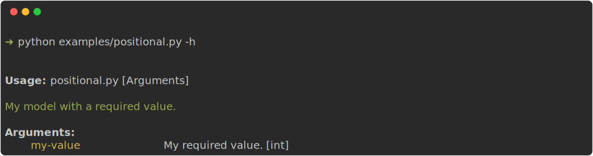
A positional argument is required. If you don’t provide it an error will be raised. So running this without any arguments will result in the following error message:
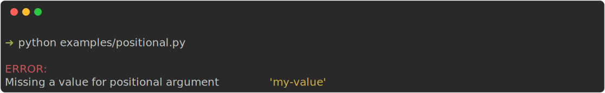
Keyword arguments#
All fields in your model with a default value are converted to cli optional arguments.
from clipstick import parse
from pydantic import BaseModel
class MyModel(BaseModel):
"""A model with a keyworded optional value"""
my_value: int = 22
"""My value with a default."""
print(parse(MyModel))
Getting help:
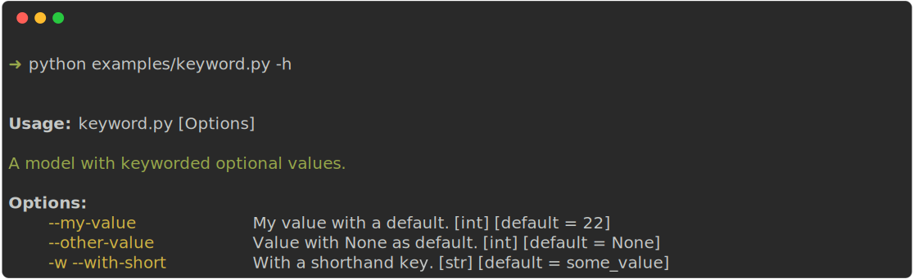
Keyword arguments with a shorthand#
Add a shorthand flag to a positional argument by providing a short annotation.
from typing import Annotated
from clipstick import parse, short
from pydantic import BaseModel
class MyModel(BaseModel):
"""A model with a keyword and shorthand optional value"""
my_value: Annotated[int, short("m")] = 22 # <-- this adds a shorthand of `-m`.
"""My value with a default."""
print(parse(MyModel))
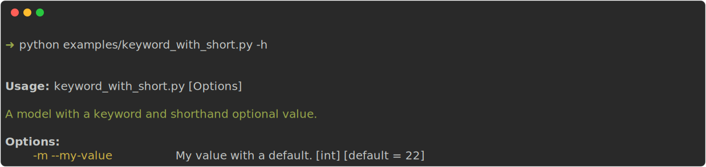
Choices#
A contraint set of values for a certain argument is defined by using the Literal annotation.
from typing import Literal
from clipstick import parse
from pydantic import BaseModel
class MyModel(BaseModel):
"""My model with choice values."""
my_value: Literal["option1", "option2"] = "option1"
"""A value with restricted values."""
model = parse(MyModel)
Help looks like this:
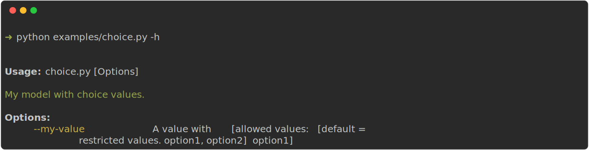
Failing to provide a valid value gives you the error:
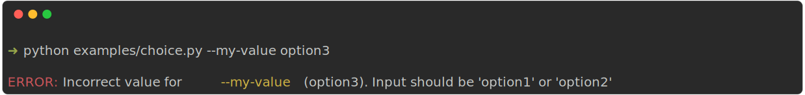
Booleans/Flags#
A flag (true/false) is defined by the bool annotation.
from clipstick import parse
from pydantic import BaseModel
class MyModel(BaseModel):
"""A model with a required boolean value."""
verbose: bool
"""Some verbose thingy."""
more_verbose: bool = False
"""More verbose thingy with a default."""
print(parse(MyModel))
python boolean.py -h
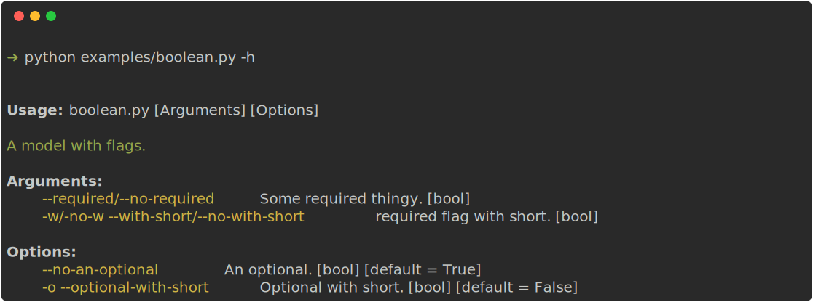
Subcommands#
Bigger cli applications will need the use of subcommands.
A probably well known example of this is the git cli with has git clone ..., git merge ... etc.
A subcommand is implemented by using pydantic models annotated with a Union:
from clipstick import parse
from pydantic import BaseModel
class Clone(BaseModel):
"""Clone a repo."""
repo: str
"""Clone this repo."""
def main(self):
print(f"Cloning repo {self.repo}")
class Merge(BaseModel):
"""Merge a branch."""
branch: str
"""Branch to merge into active branch."""
def main(self):
print(f"Merging {self.branch} into current branch.")
class MyGit(BaseModel):
"""My git tool."""
sub_command: Clone | Merge # <-- a subcommand of clone and merge
def main(self):
self.sub_command.main()
model = parse(MyGit)
model.main()
Getting help:
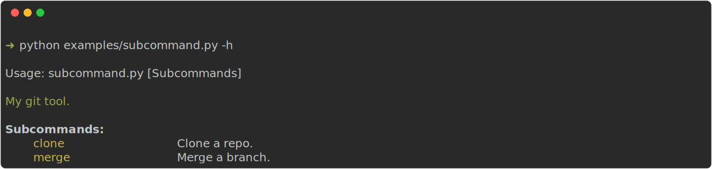
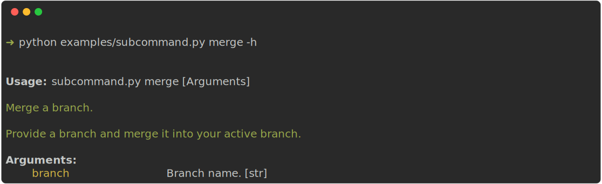
When using subcommands, be aware of the following points:
Only one subcommand per model is allowed. (If you need more (and want to follow the more object-composition path), have a look at tyro)
sub_commandas a name is not required. Any name will do.Nesting of subcommands is possible.
Validators#
Pydantic provides many field validators that can be used in clipstick too.
For example a cli which requires you to provide your age which can (obviously not be negative):
from clipstick import parse
from pydantic import BaseModel, PositiveInt
class MyModel(BaseModel):
my_age: PositiveInt = 10
"""Your age."""
model = parse(MyModel)
When you do provide a negative value, Pydantic raises an error which is picked up by clipstick and presented to the user.
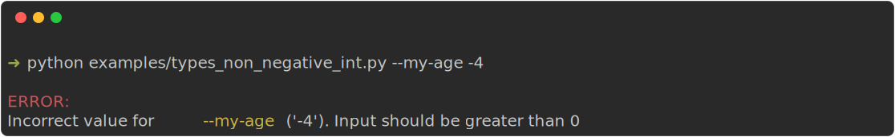
Another example would be a cli which needs a reference to an existing file location.
from clipstick import parse
from pydantic import BaseModel, FilePath
class MyModel(BaseModel):
my_path: FilePath
"""provide an existing file location."""
print(parse(MyModel))
Failing to provide a valid file location gives you:
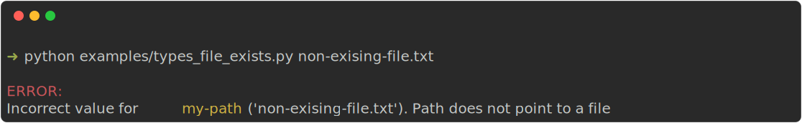
There are many more out-of-the-box validators available. Have a look here It is also pretty easy to write your own validators.